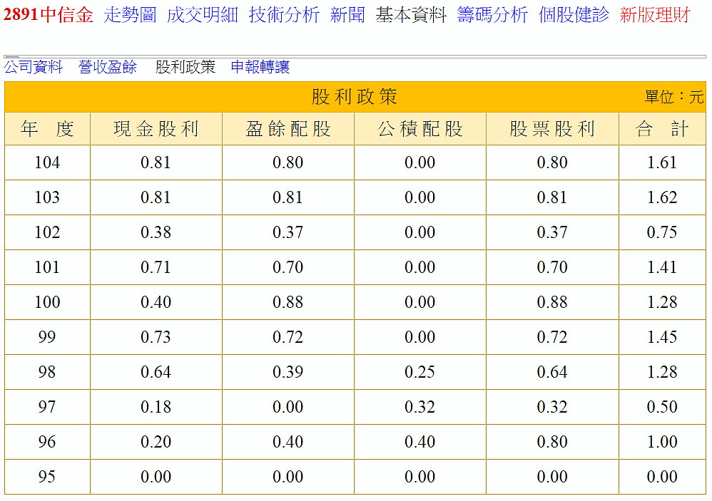
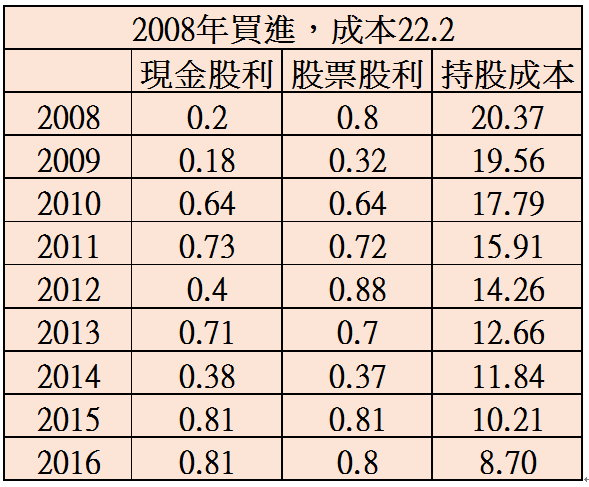

沒有配發股票股利的中信金，還能繼
續投資嗎？
2017.03.14
2017/03/13中信金舉辦法說會，公布2016年稅後盈餘279.29億元，每股稅後盈餘（EPS）1.43元，但若扣除一次性事件影響，2016年稅前盈餘微幅成長2.7%。不過，總經理吳一揆表示，為避免股本擴大，目前規畫是不發股票股利，全部以現金股利為主，但希望今年現金股利高於0.81元。以中信金13日收盤價18.8元股價來看，若發放0.81元，現金股利殖利率為4.3%，若高於0.81元，殖利率應會有5%，但目前還在規畫當中，要等董事會通過才宣布。
消息一公布出來，頗令投資人感到錯愕，股票股利最迷人之處就是可以快速累積存股的張數，而且股票股利具有節稅（以每股面額10元計算），如果都改成現金股利，對於所得稅率高的投資人，恐怕會比較不利，不過因為今年政府會修法，股利可能會分離課稅，所以還要再看一下修法的結果，目前無法評估。
配發股票股利一定會造成股本的膨脹，結果就是會稀釋EPS，可以從EPS的計算式中看出：EPS＝稅後淨利/股本 。EPS是研究一家公司的重要指標，好公司的特點是股本小（股東出錢少）但是獲利高，這樣的EPS會很高（例如大立光），股價也會飆上天。要維持高EPS有2個主要的方法：縮小股本（例如減資）、增加獲利。我們可以從下圖來看一下中信金歷年的股本、股價、EPS。
首先可以發現每年的股本都在膨脹，這樣很明顯對EPS不利，所以要進一步觀察稅後淨利，幸好有逐年穩定成長；其中2014、2015因為有業外收益，故稅後淨利較高，但是我在評估時會剔除一次性的業外收益。 首先，為何每年的股本都會一直膨脹，答案在於『股票股利』，配股就是印股票給股東，股東手上的股票變多了，公司的股本當然會膨脹。例如2015年的股本為1805億，2016年配發0.8元股票股利（一張配發80股），股本變成1805X（1+0.08）＝1950億。下圖可以看見中信金最近幾年的股利政策。  我從2008年開始買進中信金，並持有到現在，看來我的運氣很好，剛好碰上中信金『股票股利大放送』的好時光。配股的好處是手上的股票會越來越多，所以當初買進的成本也會逐年降低。假設我在2008年，用年均價22.2元買進後，每年除權息後的成本如下圖所示：  成本降低的最大好處在於可以增加報酬率，假設2017年配發1元現金股利，如果用3/13的股價18.8元買進，報酬率＝1/18.8＝5.3％。但是如果是用8.7元的成本來計算呢？報酬率則為1/8.7＝11.5％，差距不小吧！這幾天很多投資人問我要不要再繼續投資中信金？其實我的成本很低，就算只配發現金對我的影響並不會很大！這就是長期投資的好處，降低成本跟增加報酬。
成本降低的最大好處在於可以增加報酬率，假設2017年配發1元現金股利，如果用3/13的股價18.8元買進，報酬率＝1/18.8＝5.3％。但是如果是用8.7元的成本來計算呢？報酬率則為1/8.7＝11.5％，差距不小吧！這幾天很多投資人問我要不要再繼續投資中信金？其實我的成本很低，就算只配發現金對我的影響並不會很大！這就是長期投資的好處，降低成本跟增加報酬。
那麼在最近幾年買進，成本比較高的投資人要如何因應呢？首先請看看第一張圖，中信金最近幾年的稅後淨利都穩定成長，EPS也都超過1元，因此每年配發個1塊錢的現金股利並不是難事，就假設每年配發1元好了，用4～5％的殖利率來計算，合理的股價也是在20～25元之間，相較於現在18塊多的股價，還有不少的成長空間！
那麼股價會漲到20～25元嗎？一樣看一下第一張圖，2003年後的年均價還有超過30元，最近幾年卻很難超過20元，原因很簡單，配發股票股利就會壓低股價，年年配股當然讓股價年年往下嘍。如果從今以後不配發股票股利，不利的因素解除之後，股價上漲的動能才會增加。
2016年中信金的EPS是1.43元，跟2003年的1.42元差不多，但是2003年的年均價是29.6元，2017年只剩18.2元，差了11.4元。原因在哪裡呢？2003年的股本只有550億，2017年已經高達1950億，大象當然跑不快了！如今停止配股、控制股本之後，股價可以往上攀升了嗎？我覺得不大可能馬上反映，但是我勸投資人也不要心急，只要EPS能夠持穩甚至成長的話，剔除股本成膨脹的變數之後，股價還是會慢慢的回復往日的水準。
其實股利是『過去』賺的錢，投資股票重點在於『未來』賺的錢，中信金今年前2月的EPS大成長，高達0.37元，預估一年就是0.37X6＝2.22元，不過我習慣保守估計，算他1.6元好了！也符合公司法說中提到的，今年獲利會比去年的1.43元成長。只要EPS能夠逐年成長，而且股本不再膨脹的話，將來要超過2元也不是難事，股價還是有機會碰到25元的。我的投資策略很簡單，因為我的成本很低，就持續每年領1元的股利，然後認真做研究，把股利投入一些成長性更高的股票。至於手上300多張的中信金，我比較關心的是每年的EPS是否穩定，當然最好還是要成長。只要EPS令我滿意，我可以耐心等上5年，等他的股價再站上24元，這樣子等於每年賺到1元的價差，加上1元的股利總共就是2元，以目前18塊多的股價來計算，還是不錯的。所以，與其煩惱中信金不配發股票，還不如關心獲利是否穩定成長。